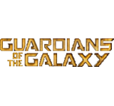
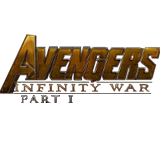

- 第一阶段
- 第二阶段
- 第三阶段
-
2008年4月30日

改编自“漫威漫画”中的经典故事，讲述了工业家及发明家托尼·斯塔克遭阴谋绑架，被迫制造最致命的武器，身受重伤的他却暗中制造了一套高科技盔甲，保护自己逃生，从此变身“钢铁侠”保卫地球。
-
2008年8月20日

故事讲述科学家布鲁斯·班纳（爱德华·诺顿 饰）继续绝望地寻找能治愈他那被γ辐射毒害的体内细胞之疗法，以及解除那蕴藏体内、不受约束的另一个自己──绿巨人。
-
2010年4月25日
剧情发生在托尼公布自己“钢铁侠”身份的六个月后，这带来了意想不到的连锁反应，他与周围人的关系发生了改变，他亲近的人也成为敌人的报复对象。
-
2011年5月2日

故事的中心人物是拥有强大神力的雷神Thor因他自大鲁莽的行为被贬入凡间，被迫与人类一同生活。Thor必须学会如何成为一个真正的英雄，才能对抗来自神界的强大黑暗势力。
-
2011年7月19日
讲述二战时期，被注射了超级士兵血清的美国青年斯蒂夫拥有了人类最完美躯体。斯蒂夫被任命为美国队长，他带着坚不可摧的盾牌和深谙战术的头脑，向纳粹党的九头蛇军团宣战。
-
2012年5月4日

片中讲述神盾局指挥官尼克·弗瑞为了对付《雷神》中被流放的洛基，将钢铁侠、美国队长、雷神托尔、绿巨人、黑寡妇和鹰眼侠六位超级英雄集结在一起，成立了“复仇者联盟”，共同抗敌。
-
2013年5月1日

故事时间发生在《复仇者联盟》纽约大战结束半年之后，托尼·斯塔克的生活被强敌毁灭殆尽，无路可退的他必须依靠精良的高科技装备以及过人才智，保护自己和身边最亲近的人。
-
20113年11月8日

故事时间发生在《复仇者联盟》纽约大战结束一年后，雷神托尔押送着弟弟洛基回到仙宫接受审判，此时一股强大的远古黑暗势力正在一步步逼近。
-
2014年4月4日

故事时间发生在纽约大战两年后，美国队长已经定居华盛顿。然而当一起神秘袭击事件伤害到神盾局的重要人物时，他必须重新出马，和黑寡妇一起找出幕后真凶。
-
2014年10月10日
讲述因偷走神秘球体而被疯狂追杀的“星爵”被迫结盟四个格格不入的乌合之众：火箭浣熊、树人格鲁特、卡魔拉及毁灭者德拉克斯，他们必须破釜沉舟决一死战，才可能拯救整个银河系。
-
2015年5月12日
身经百战的超级英雄们产生了职业倦怠，已经卸下钢铁战甲的托尼·斯塔克因此发明了“奥创”——有自我意识、有学习能力的人工智能机器人，并将指挥机器人军团的重任交给奥创。
-
2015年7月17日

职业骗子斯科特拥有身体变小力量，他必须接受帮助他的导师，生化学家汉克保护他所发明的蚁人战服。在强大的敌人威胁下，皮姆与朗必须策划一场惊天骗局来拯救世界。
-
2013年5月1日

该片根据漫威2006年出版的漫画《内战》改编，背景故事承接于《复仇者联盟2：奥创纪元》事件的余波中，讲述了奥创事件后引发的一系列政治问题导致复仇者之间内部矛盾激化的故事
-

20113年11月8日
该片讲述了神经外科医生史蒂芬·斯特兰奇在一次车祸中失去了双手的能力，最后在古一法师的帮助下让他成为了拥有超凡魔力的奇异博士。
-
2014年4月4日

《银河护卫队2》根据漫威漫画改编，讲述了护卫队成员穿越宇宙，继续在外太空的冒险之旅，他们必须共同作战，守护彼此，同时要解开彼得·奎尔的身世之谜的故事。
-
2014年10月10日

该片讲述失去了雷神之锤的雷神托尔被囚禁在宇宙另一端的星系中，争分夺秒试图回到阿斯加德，阻止死神海拉发动巨大劫难——诸神黄昏，摧毁阿斯加德及其所有文明的故事
-

2015年5月12日

影片根据漫威漫画改编，故事背景承接于《美国队长3：内战》，讲述了黑豹回到了瓦坎达担任国王，然而当过去的劲敌再次出现，他被卷入一场正邪大战当中的故事。
-
2015年7月17日
该片是《复仇者联盟》系列电影的第三部，是漫威电影宇宙的第19部电影，该片与《雷神3：诸神黄昏》和《黑豹》剧情连接，讲述了复仇者联盟和他们的超级英雄盟友们牺牲一切，阻止灭霸毁灭一半宇宙生命的故事